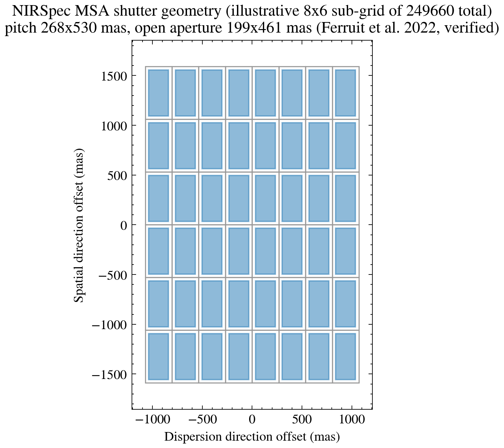
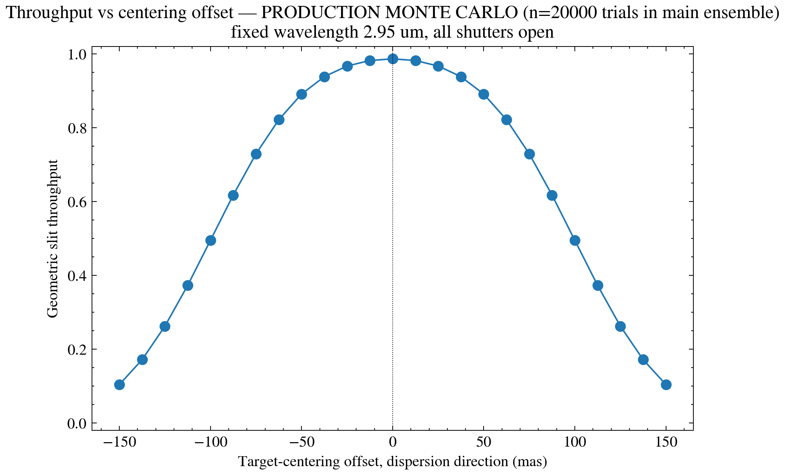

Provenance
SHA-256, LF-normalised text
3e4afeeb575e57f285e54cad566317f96fac5dfa761d9377cf7a673dc018f2e2Browse 14 versioned evidence files. Table previews simply display stored rows. Consult the project report for the source, processing steps, and inference assumptions.


3e4afeeb575e57f285e54cad566317f96fac5dfa761d9377cf7a673dc018f2e2| product_id | source | source_url | retrieved_utc | sha256 | file_size_bytes | selection_reason |
|---|---|---|---|---|---|---|
| shutter_pitch_mas | Ferruit et al. 2022 (A&A, arXiv:2202.03306) Sec 2.2 | https://arxiv.org/abs/2202.03306 | 2026-07-13T00:00:00Z | b7803ce8a3e0faaf06da3898f3ded7b4bfeeebf422e69a2edfc141bb5b765a3 | 0 | MSA shutter pitch 105x204 um physical / 268x530 mas on-sky field-averaged; sets geometry.SHUTTER_PITCH_X_MAS / SHUTTER_PITCH_Y_MAS |
| shutter_open_area_mas | Ferruit et al. 2022 (A&A, arXiv:2202.03306) Sec 2.2 | https://arxiv.org/abs/2202.03306 | 2026-07-13T00:00:00Z | f3247b48296189d5d64ec9552d78cad99ca7d38f238784a2afd03d77c912a29 | 0 | Shutter open aperture 78x178 um physical / ~199x461 mas on-sky; sets geometry.SHUTTER_OPEN_WIDTH_MAS / SHUTTER_OPEN_HEIGHT_MAS |
| msa_array_layout | Ferruit et al. 2022 (A&A, arXiv:2202.03306) Sec 2.2 | https://arxiv.org/abs/2202.03306 | 2026-07-13T00:00:00Z | 041350b17a5e3be09d831ebb8c271c56f5f98bd05e24bb4ed527b8313d0dc35 | 0 | 4 quadrants x 365x171 individually addressable shutters = 249660 total; sets geometry.SHUTTERS_PER_QUADRANT_X/Y and N_QUADRANTS |
| shutter_operability_fraction | Rawle et al. 2022 (SPIE Proc., arXiv:2208.04673) abstract | https://arxiv.org/abs/2208.04673 | 2026-07-13T00:00:00Z | 6f48e1706fda86e5af5d1f6fe85401092d4e2fc3343afb716da611c2042e689 | 0 | Historical aggregate operability context only. Static operability is position-specific planning information and is excluded fro... |
782f7050de72bb3ad7dfe62ab2c5a85274e33832e8445183480b8278396205e0d6ad1b0f7bb86545ae0861daf356cb957669daa65e9c68867f31da05765892d5| x | value | uncertainty |
|---|---|---|
| 0 | 0.10 | 0.02 |
| 1 | 0.18 | 0.03 |
| 2 | 0.14 | 0.02 |
| 3 | 0.24 | 0.04 |
2231cd2f44a7854fefcb8da60f527333a903c9c7a75fbd9154fdde13de6993052cb1a44d2aca59a0fbf35bd826b6dcc6c46c0503acab6ba79946abcc1fc7aba763892a3b311ee16c95230261ee2d081ac607224f3d48652057ff85b5a257bf4f| centering_sigma_mas | command_failure_fraction | n_trials | mean_geometric_throughput_given_success | mean_effective_throughput |
|---|---|---|---|---|
| 10.0 | 0.0 | 20000 | 0.9567476547265981 | 0.9567476547265981 |
| 10.0 | 0.01 | 20000 | 0.9567572503523157 | 0.946759137086134 |
| 10.0 | 0.02 | 20000 | 0.956772430898549 | 0.9371107574435839 |
| 10.0 | 0.03 | 20000 | 0.9567908896509899 | 0.9273217302497396 |
7733211518ed6deaf4109ccc6bfdbeb2089372421af03772dbc2595536dcef55bf7babe5cf39033fc06a87d7b13fec96ca019566dd2071c9c52e69471a072c51699c95fe12aac3b9bc6349c295591d9098e3fef7021ce954fbb40dadb15d6f359331a5fac34dc8d6bee7753bd55b4e560a8d3f002bf6ba2ae24fbb40dc7cb546e555c4c6d26f03ee8c056d0fa5a1c38e4d7f7bdcc56dd828dde52415015094197c69d36233f3bb4e3f08ea68aa7bc4f3b1d3b96818021567783856a6ee7a51324a0a58e1b93cf2cae0fa800db1576992e004e60f70b259b5366af179b5178ac6aa8baaed2cc45d36c13f9a2a6c59614b5bed07fa6ce513fc2f1c0777ef437094SHA-256 values verify the stored files. They do not independently validate the scientific analysis. Rebuild this page with python scripts/evidence_catalog.py followed by python scripts/render_evidence_page.py.